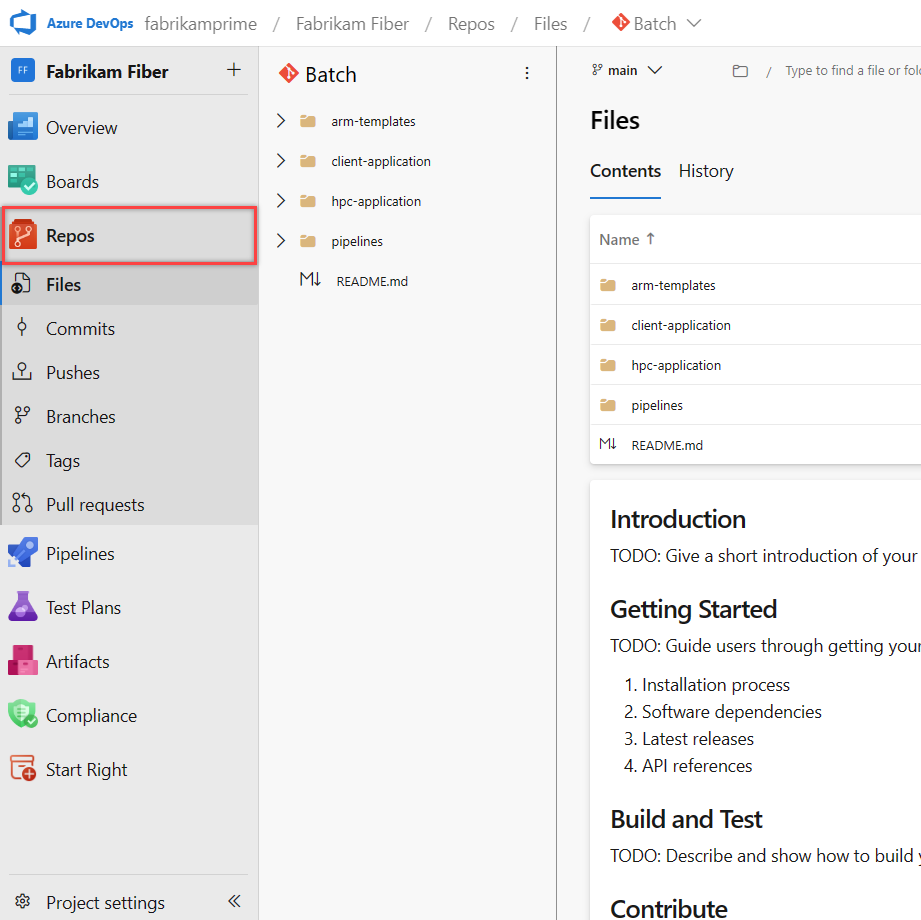

一個專案,多個 Git repo
Azure Repos 是 Azure DevOps 內建的原始碼托管服務,提供的是標準 Git——既有的 Git 指令與任何 Git 用戶端、IDE 在此完全適用,差別只在於遠端托管於 dev.azure.com。因此本課不重述 Git 操作,而聚焦 Repos 的結構與介面。
關鍵在於層級:一個專案可容納多個 Git repo,而非僅限一個。建立專案時系統會產生一個與專案同名的預設 repo,之後可於 Repos 頁面右上角的 repo 選單持續新增;微服務拆分或獨立共用函式庫等情境,常以多個 repo 分而治之。每個 repo 各自獨立,擁有專屬的分支、提交歷史與設定。

圖 3.1 — Azure Repos Files 頁,右上角的 repo 選單可切換與新增 repo (來源:Microsoft Learn)
Repos 左側六個子功能
Repos 左側子功能依下列順序排列,各自對應一個熟悉的 Git 概念,僅以介面化方式呈現。逐項用途如下:
| 子功能 | 用途 |
|---|---|
| Files | 瀏覽所選分支的資料夾與檔案內容,README 自動渲染;支援於瀏覽器內直接編輯並提交。 |
| Commits | 所選分支的提交歷史,逐筆列出 message、作者、時間與 diff;commit message 內以 #編號 可雙向關聯 Boards work item。 |
| Pushes | 每一次 git push 的記錄,顯示誰、在何時、把哪些 commit 推到哪個分支;粒度比 Commits 粗,一次 push 可含多個 commit。 |
| Branches | 建立、刪除、比較分支與設定預設分支;可對受保護分支套用分支原則 (branch policies),強制走 PR 並通過審查才能合併。 |
| Tags | 在特定 commit 上標記版本點 (如 v1.0.0),用於標示發行版本,可於此瀏覽、建立與刪除。 |
| Pull requests | Repos 的協作核心,把分支合併變成可審查、可投票的提案;可加入 reviewers、關聯 work item,並搭配分支原則設為必要核准。 |
Repos 的價值不在 Git 本身,而在整合
這些子功能的操作與裸 Git 一致,真正值得採用的是跨服務連結:commit 與 PR 關聯 work item 讓需求可追蹤、分支原則把 code review 從人為約定升級為系統強制、build validation 把 Pipelines 的測試結果綁進 PR。下一堂 Pipelines 會接續這條線。